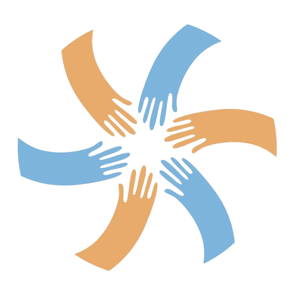

Беларускія і замежныя некамэрцыйныя арганізацыі
Конкурс ідэяў "Зробім лепш 2020"
Конкурс ладзіцца Асамблеяй НДА ў супрацоўніцтве
зь Беларускім домам правоў чалавека
Зробім лепш
Ваша ідэя можа стаць часткай кампаніі і атрымаць падтрымку на рэалізацыю...
Кампанія “Зробім лепш” скіравана на паляпшэньне іміджу грамадзкіх арганізацыяў і ініцыятываў праз сумесную дзейнасьць і папулярызацыю грамадзкай актыўнасьці сярод грамадзянаў.
Галоўны крытэр адбору ідэяў — прыцягненьне грамадзянаў да вырашэньня праблемаў ва ўмовах зьменлівага сьвету і наступстваў эпідэміі.
Галоўны інфармацыйны партнэр кампаніі — NAVINY.BY
Хто можа прыняць удзел
Беларускія ініцыятывы
Нефармальныя групы, якія ўжо вядуць грамадзкую дзейнасьць і ў склад якіх уваходзіць ня менш за 3 чалавекі
Дэталі кампаніі
Тэрмін рэалізацыі ідэй: 15.05—30.06.2020
Дэдлайн падачы заявак: 19.04.2020
Колькасьць лякальных кампаній: 40
Фінансавая падтрымка — да 500 эўра
Пры фармуляваньні ідэяў просьба зьвяртаць увагу на зьнешнія пагрозы рэалізацыі. Тэрміны рэалізацыі некаторых заявак могуць быць перанесеныя рашэньнем конкурснай камісіі.
Прыклады дзейнасьці
Валянтэрскія акцыі па прыборцы і добраўпарадкаваньні
Культурныя падзеі, імпрэзы і мерапрыемствы
Мерапрыемствы па папулярызацыі мовы
Кампаніі па папулярызацыі здаровага ладу жыцьця
Мерапрыемствы па ліквідацыі наступстваў пандэміі каранавірусу
Акцыі па прыборцы і добраўпарадкаваньні
Прыцягненьне людзей да аказаньня адраснай дапамогі
Інфармацыйныя і адвакацыйныя кампаніі (у тым пэтыцыі, звароты)
Іншыя падзеі, якія прыцягваюць людзей да грамадзкай дзейнасьці
Асноўны крытэр — непасрэдны ўдзел мэтавых групаў у дзейнасьці
Што ня можа быць патрымана
Любая дзейнасьць, наўпрост зьвязаная з выбарамі
Дзейнасьць ад імя рэлігійных арганізацыяў
Акцыі, якія скіраваныя толькі на сябраў арганізацыі ці ініцыятывы
Акцыі, якія не прадугледжваюць прыцягненьне да дзейнасьці мэтавых групаў
Выдаткі на арэнду і ўтрыманьне офісу
Дзейнасьць, падтрыманая зь іншых крыніцаў
Што атрымаюць удзельнікі кампаніі
Кансультацыйную і арганізацыйную падтрымку сваіх акцыяў
Інфармацыйную падтрымку ад буйного навінавага парталу naviny.by
Асьвятленьне вашых падзеяў на рэсурсах Асамблеі НДА (старонка кампаніі, сацсеткі, штотыднёвы дайджэст)
Дызайн афішаў і пастоў для сацыяльных сетак
Крутую візуальную прадукцыю (кашулькі, стужкі, нататнікі, сьцікеры)
Да 500 эўра на тое, каб зрабіць вашу кампанію лепш
Хранаграма праекту
Збор заявак. Ідэі праектаў ад беларускіх і замежных арганізацыяў ды ініцыятываў прымаюцца не пазьней за 19 красавіка 2020 праз адрас zrobimleps20202@gmail.com. Зьвярніце ўвагу, што мы прапануем дасылаць заяўкі ў зашыфраваным выглядзе.
Пасяджэньне камісіі. Адборачная камісія паведаміць праз email пра пераможцаў конкурсу да 1 траўня 2020.
Падпісаньне дамоваў. З мэнэджэрамі праектаў будуць падпісаныя дамовы. Мы зьвяжамся з вамі праз электронную пошту або чат у сігнале. Заставайцеся на сувязі.
Рэалізацыя ідэяў. Рэалізацыя ідэяў кампаніі "Зробім лепш 2020" пачнецца 1 чэрвеня і працягнецца да 30 чэрвеня 2020. Заўважце, што тэрмін рэалізацыі кампаніяў можа быць працягнуты рашэньнем конкурснай камісіі ў выпадку кепскага эпідэміялягічнага становішча ў сувязі з пандэміяй каранавірусу.
Падвядзеньне вынікаў. Агульнанацыянальная кампанія "Зробім лепш 2020" завершыцца публічным мерапрыемствам, дзе мы падвядзем вынікі ўсіх акцыяў і падзеяў, якія былі зладжаныя цягам кампаніі.
Чэк-ліст
Вагаешся? Правер ці пасуе твая ідэя...
Ты прадстаўляеш некамэрцыйную арганізацыю ці ініцыятыву. Арганізацыя можа быць зарэгістраваная ў Беларусі ці за мяжой. Ініцыятыва павінна складацца ня менш за 3 чалавекі.
Ты ведаеш сваю мэтавую групу. Дзейнасьць павінна быць арыентаваная на вызначаную канкрэтную групу, напрыклад, маладыя маці, жыхары дома, навучэнцы ВНУ і гд.
Твая ідэя не зьвязаная з выбарамі або рэлігіяй. Мы ня можам падтрымаць нават самыя выдатныя задумкі зьвязаныя з гэтымі тэмамі.
Грамадзяне будуць напрамую ўдзельнічаць у тваёй кампаніі. Задача гэтага конкурсу складаецца ў павелічэньні ўдзелу грамадзянаў у вырашэньні праблемаў.
Падавай заяўку ўжо цяпер
Заяўкі прымаюцца на паштовую скрыню zrobimleps20202@gmail.com з абавязковай пазнакай “Хачу зрабіць лепш” да 19 красавіка 2020 г.
Усе пытанні, звязаныя з падачай заявак, правядзеннем конкурсу, ажыццяўленнем праектаў, можна накіроўваць на адрас (адрас). Просім дасылаць заяўкі у шыфраваным выглядзе. Ключ PGP можна спампаваць (па спасылцы), інструкцыя па карыстаньні бясьпечнымі каналамі сувязі дасяжная тут (спасылка).
дзён
гадзін
хвілін
сэкунд